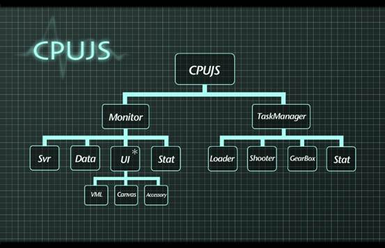

深入理解CPUJS
一、 CPUJS的原理
由于目前JavaScript并不能直接获取到系统CPU的运行情况（可能以后的浏览器会支持到），所以这里采用延时感知探测原理，直接从用户最直观的感受出发。因为用户之所以会感知到卡就是因为浏览器无法及时响应用户的交互行为，是这个时延太长导致用户感知到卡。
而研究表明，只要交互的延时超过100ms，人类就可以明显感知到卡了。所以CPUJS把这个100ms当成延时的上限来绘制CPU曲线。
为了探测当前页面性能，CPUJS采用每隔100ms定时打时间点的方式，来检测两个点之间的实际时间间隔，假如这个间隔超出了100ms，显示在曲线上就是100%。假如延时大大超出100ms，反映到曲线上会出现一段时间的100%，通过100%持续的长度也可以标识卡的程度。
所以0%表示的是当前页面的交互可以马上被响应、页面流畅、CPU开销低的意思。
二、 CPUJS的结构图

从结构图可以很清晰的看出CPUJS目前主要包括两大部分：
1）
Monitor （CPUJS的监控引擎，定时打点，看实际点与点之间的间隔来判断当前卡的程度）
a)
Svr （CPUJS模式开启Monitor的按需服务模式，当有服务请求的时候才会运行）
b)
Data （Monitor采集到的CPU相关数据的处理模块）
c)
UI（UI库整个都是按需异步加载的模块，在需要展示图形化曲线的时候去加载）
d)
Stat（Monitor抛给外部的）
2）
TaskManager（CPU任务调度引擎，目的是通过当前页面整体的CPU开销情况来动态调度任务，避免一次性执行太多任务导致页面卡死而无法马上响应用户的交互行为，导致用户觉得页面很卡）
a)
Loader（负责载入任务）
b)
Shooter（负责将Loader载入的任务执行掉）
c)
GearBox（变速箱，负责增加或减少同时执行的任务数，实现任务的智能调度，确保不卡）
d)
Stat（任务执行相关的统计逻辑，例如单次任务执行的开销等）
三、 CPUJS的配置
a)
TurnOn 用来打开一些默认不开启的功能：
i.
Monitor//是否开启cpu曲线【?cpujs_monitor_on】
ii.
Stat//是否开启统计功能【?cpujs_stat_on】
iii.
Log//是否开启log功能【?cpujs_log_on】
iv.
TryCatch//是否开启任务执行的tryCatch功能，避免任务执行失败影响整体调度【?cpujs_trycatch_on】
v.
ConsoleUI//在console里面实时打出的cpu曲线per值，方便查看发生卡的附近执行了哪些函数【?cpujs_consoleui_on】
b)
TurnOff 用来关掉一些默认开启的功能：
i.
TM//是否关闭任务管理器智能调度【?cpujs_tm_off】
ii.
FastLoad//是否关闭FastLoad【?cpujs_fastload_off】
iii.
EnergySave//是否关闭节能功能（按需启动Monitor，当没有服务的时候就暂停运转）【?cpujs_energysave_off】
c)
Config 高级设置选项：
i.
TM_MAX_CPU//设置任务调度器尽量不要超过的CPU阀值，默认是30，表示尽量不要让任务执行过程导致Monitor曲线超过30%【CPUJS.Config.TM_MAX_CPU=30;】
ii.
TM_MISSION_DELAY//设置单次任务执行时间超过多少ms要被log出来，默认是5ms
【CPUJS.Config. TM_MISSION_DELAY =5;】
四、 CPUJS的配置使用说明
d)
一般情况下在页面地址的search里面添加cpujs_debugger，即可以进入cpujs的调试模式，在调试模式下很多默认不开启的功能都会被打开，具体看上面的TurnOn部分
e)
TurnOn和TurnOff都可以在页面url里面通过增加参数来设置，具体看上面【】里的解释，多个配置可以用&隔开，例如url?cpujs_monitor_on&cpujs_tm_off
f)
TurnOn和TurnOff也可以通过加载完CPUJS之后，通过代码参数赋值来设置，例如：
require([' /cpu'],function(cpujs){
cpujs.TurnOn.Monitor = true; //打开Monitor曲线
cpujs.TurnOff.TM
= true; //关掉任务调度器，每load一个任务，都会马上执行它
cpujs.bootstrap();//先设置好配置再启动cpujs初始化
});